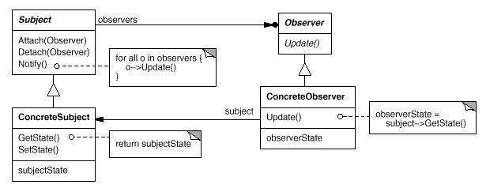

Xác định mối quan hệ một-nhiều giữa các đối tượng sao cho khi một đối tượng thay đổi trạng thái, tất cả các đối tượng phụ thuộc của nó được thông báo và cập nhật tự động.
Subject (Chủ thể)
- Mô tả : Đối tượng chứa trạng thái mà các đối tượng khác (Observer) theo dõi.
-
Nhiệm vụ
- Quản lý danh sách các observers.
- Cung cấp phương thức để thêm hoặc xóa observers.
- Thông báo cho tất cả các observers khi có sự thay đổi trạng thái.
Observer (Người quan sát)
- Mô tả : Đối tượng nhận thông báo khi trạng thái của Subject thay đổi.
-
Trách nhiệm :
- Định nghĩa một giao diện hoặc phương thức cập nhật mà Subject có thể gọi khi trạng thái thay đổi.
- Thực hiện phương thức cập nhật để phản ứng lại thay đổi trong Subject.
ConcreteSubject (Chủ thể cụ thể)
- Mô tả : Một implementation cụ thể của Subject, giữ trạng thái cụ thể và thông báo cho observers khi trạng thái thay đổi.
-
Trách nhiệm :
- Lưu trữ trạng thái của nó.
- Thực hiện việc thông báo đến các observers.
ConcreteObserver (Người quan sát cụ thể)
- Mô tả : Một implementation cụ thể của Observer, cập nhật trạng thái của nó để phù hợp với Subject.
- Trách nhiệm :
- Lưu trữ một tham chiếu tới Subject.
- Thực hiện phương thức cập nhật để phản ánh trạng thái mới của Subject.